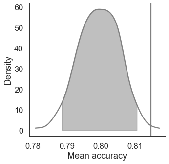
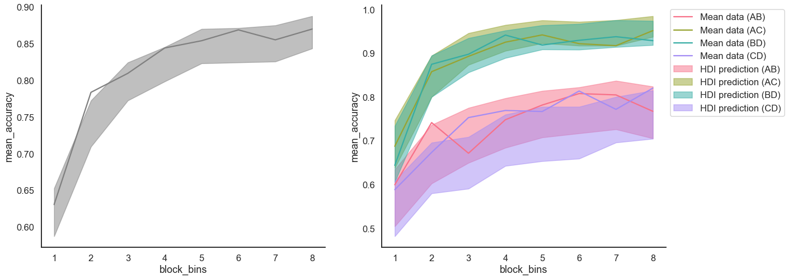

Fit a RL model on hierarchical data¶
[1]:
import rlssm
import pandas as pd
import os
Import the data¶
[2]:
# import some example data:
data = rlssm.load_example_dataset(hierarchical_levels = 2)
data.head()
[2]:
| participant | block_label | trial_block | f_cor | f_inc | cor_option | inc_option | times_seen | rt | accuracy | |
|---|---|---|---|---|---|---|---|---|---|---|
| 0 | 1 | 1 | 1 | 43 | 39 | 2 | 1 | 1 | 1.244082 | 0 |
| 1 | 1 | 1 | 2 | 60 | 50 | 4 | 3 | 1 | 1.101821 | 1 |
| 2 | 1 | 1 | 3 | 44 | 36 | 4 | 2 | 2 | 1.029923 | 0 |
| 3 | 1 | 1 | 4 | 55 | 55 | 4 | 3 | 2 | 1.368007 | 0 |
| 4 | 1 | 1 | 5 | 52 | 49 | 4 | 3 | 3 | 1.039329 | 1 |
Initialize the model¶
[3]:
# you can "turn on and off" different mechanisms:
model = rlssm.RLModel_2A(hierarchical_levels = 2,
increasing_sensitivity = False,
separate_learning_rates = True)
Using cached StanModel
Fit¶
[4]:
# sampling parameters
n_iter = 3000
n_warmup = 1000
n_chains = 2
# learning parameters
K = 4 # n options in a learning block (participants see 2 at a time)
initial_value_learning = 27.5 # intitial learning value (Q0)
[5]:
model_fit = model.fit(
data,
K,
initial_value_learning,
warmup = n_warmup,
iter = n_iter,
chains = n_chains)
Fitting the model using the priors:
sensitivity_priors {'mu_mu': 1, 'sd_mu': 30, 'mu_sd': 0, 'sd_sd': 30}
alpha_pos_priors {'mu_mu': 0, 'sd_mu': 1, 'mu_sd': 0, 'sd_sd': 0.1}
alpha_neg_priors {'mu_mu': 0, 'sd_mu': 1, 'mu_sd': 0, 'sd_sd': 0.1}
WARNING:pystan:Maximum (flat) parameter count (1000) exceeded: skipping diagnostic tests for n_eff and Rhat.
To run all diagnostics call pystan.check_hmc_diagnostics(fit)
Checks MCMC diagnostics:
n_eff / iter for parameter log_p_t[1] is 0.0002799233707527157!
E-BFMI below 0.2 indicates you may need to reparameterize your model
n_eff / iter for parameter log_p_t[2] is 0.0002799233707527157!
E-BFMI below 0.2 indicates you may need to reparameterize your model
n_eff / iter for parameter log_p_t[81] is 0.0002819023696361508!
E-BFMI below 0.2 indicates you may need to reparameterize your model
n_eff / iter for parameter log_p_t[161] is 0.00028433848233607736!
E-BFMI below 0.2 indicates you may need to reparameterize your model
n_eff / iter for parameter log_p_t[162] is 0.00028433848233607736!
E-BFMI below 0.2 indicates you may need to reparameterize your model
n_eff / iter for parameter log_p_t[241] is 0.0002933653734114046!
E-BFMI below 0.2 indicates you may need to reparameterize your model
n_eff / iter for parameter log_p_t[242] is 0.0002933653734114046!
E-BFMI below 0.2 indicates you may need to reparameterize your model
n_eff / iter for parameter log_p_t[320] is 0.0002928140782404197!
E-BFMI below 0.2 indicates you may need to reparameterize your model
n_eff / iter for parameter log_p_t[400] is 0.00028898105267411957!
E-BFMI below 0.2 indicates you may need to reparameterize your model
n_eff / iter for parameter log_p_t[480] is 0.0002790395611894542!
E-BFMI below 0.2 indicates you may need to reparameterize your model
n_eff / iter for parameter log_p_t[482] is 0.0002790395611894542!
E-BFMI below 0.2 indicates you may need to reparameterize your model
n_eff / iter for parameter log_p_t[560] is 0.00028717534526783535!
E-BFMI below 0.2 indicates you may need to reparameterize your model
n_eff / iter for parameter log_p_t[561] is 0.00028717534526783535!
E-BFMI below 0.2 indicates you may need to reparameterize your model
n_eff / iter for parameter log_p_t[640] is 0.00028800993107425766!
E-BFMI below 0.2 indicates you may need to reparameterize your model
n_eff / iter for parameter log_p_t[720] is 0.0002576570694326876!
E-BFMI below 0.2 indicates you may need to reparameterize your model
n_eff / iter for parameter log_p_t[723] is 0.0002576570694326876!
E-BFMI below 0.2 indicates you may need to reparameterize your model
n_eff / iter for parameter log_p_t[800] is 0.00025343033893801493!
E-BFMI below 0.2 indicates you may need to reparameterize your model
n_eff / iter for parameter log_p_t[801] is 0.00025343033893801493!
E-BFMI below 0.2 indicates you may need to reparameterize your model
n_eff / iter for parameter log_p_t[880] is 0.0002539916221127828!
E-BFMI below 0.2 indicates you may need to reparameterize your model
n_eff / iter for parameter log_p_t[881] is 0.0002539916221127828!
E-BFMI below 0.2 indicates you may need to reparameterize your model
n_eff / iter for parameter log_p_t[959] is 0.0002546669394810881!
E-BFMI below 0.2 indicates you may need to reparameterize your model
n_eff / iter for parameter log_p_t[1039] is 0.0002522257027637923!
E-BFMI below 0.2 indicates you may need to reparameterize your model
n_eff / iter for parameter log_p_t[1041] is 0.0002522257027637923!
E-BFMI below 0.2 indicates you may need to reparameterize your model
n_eff / iter for parameter log_p_t[1119] is 0.00025264916607589764!
E-BFMI below 0.2 indicates you may need to reparameterize your model
n_eff / iter for parameter log_p_t[1199] is 0.0002632187948482939!
E-BFMI below 0.2 indicates you may need to reparameterize your model
n_eff / iter for parameter log_p_t[1279] is 0.0002857366973637469!
E-BFMI below 0.2 indicates you may need to reparameterize your model
n_eff / iter for parameter log_p_t[1281] is 0.0002857366973637469!
E-BFMI below 0.2 indicates you may need to reparameterize your model
n_eff / iter for parameter log_p_t[1359] is 0.0002867847068497782!
E-BFMI below 0.2 indicates you may need to reparameterize your model
n_eff / iter for parameter log_p_t[1439] is 0.00026986409994502706!
E-BFMI below 0.2 indicates you may need to reparameterize your model
n_eff / iter for parameter log_p_t[1519] is 0.00027615916806837725!
E-BFMI below 0.2 indicates you may need to reparameterize your model
n_eff / iter for parameter log_p_t[1520] is 0.00027615916806837725!
E-BFMI below 0.2 indicates you may need to reparameterize your model
n_eff / iter for parameter log_p_t[1599] is 0.0002757065088419681!
E-BFMI below 0.2 indicates you may need to reparameterize your model
n_eff / iter for parameter log_p_t[1679] is 0.00025656750207598834!
E-BFMI below 0.2 indicates you may need to reparameterize your model
n_eff / iter for parameter log_p_t[1681] is 0.00025656750207598834!
E-BFMI below 0.2 indicates you may need to reparameterize your model
n_eff / iter for parameter log_p_t[1682] is 0.0002578704495630675!
E-BFMI below 0.2 indicates you may need to reparameterize your model
n_eff / iter for parameter log_p_t[1759] is 0.0002573090744724767!
E-BFMI below 0.2 indicates you may need to reparameterize your model
n_eff / iter for parameter log_p_t[1839] is 0.00026016390719811827!
E-BFMI below 0.2 indicates you may need to reparameterize your model
n_eff / iter for parameter log_p_t[1841] is 0.00026016390719811827!
E-BFMI below 0.2 indicates you may need to reparameterize your model
n_eff / iter for parameter log_p_t[1919] is 0.00026006908560515305!
E-BFMI below 0.2 indicates you may need to reparameterize your model
n_eff / iter for parameter log_p_t[1998] is 0.0002538633169948887!
E-BFMI below 0.2 indicates you may need to reparameterize your model
n_eff / iter for parameter log_p_t[2078] is 0.0002546920004679544!
E-BFMI below 0.2 indicates you may need to reparameterize your model
n_eff / iter for parameter log_p_t[2158] is 0.00026447678259718045!
E-BFMI below 0.2 indicates you may need to reparameterize your model
n_eff / iter for parameter log_p_t[2237] is 0.00028661549004448225!
E-BFMI below 0.2 indicates you may need to reparameterize your model
n_eff / iter for parameter log_p_t[2317] is 0.00029329505695239484!
E-BFMI below 0.2 indicates you may need to reparameterize your model
n_eff / iter for parameter log_p_t[2318] is 0.00029329505695239484!
E-BFMI below 0.2 indicates you may need to reparameterize your model
n_eff / iter for parameter log_p_t[2397] is 0.00025230405014892165!
E-BFMI below 0.2 indicates you may need to reparameterize your model
n_eff / iter for parameter log_p_t[2477] is 0.000258199347568308!
E-BFMI below 0.2 indicates you may need to reparameterize your model
n_eff / iter for parameter log_p_t[2556] is 0.00025732370268245514!
E-BFMI below 0.2 indicates you may need to reparameterize your model
n_eff / iter for parameter log_p_t[2557] is 0.00025732370268245514!
E-BFMI below 0.2 indicates you may need to reparameterize your model
n_eff / iter for parameter log_p_t[2636] is 0.00025649225036419247!
E-BFMI below 0.2 indicates you may need to reparameterize your model
n_eff / iter for parameter log_p_t[2637] is 0.00025649225036419247!
E-BFMI below 0.2 indicates you may need to reparameterize your model
n_eff / iter for parameter log_p_t[2714] is 0.0002892244128889484!
E-BFMI below 0.2 indicates you may need to reparameterize your model
n_eff / iter for parameter log_p_t[2715] is 0.0002892244128889484!
E-BFMI below 0.2 indicates you may need to reparameterize your model
n_eff / iter for parameter log_p_t[2794] is 0.00029108436032635!
E-BFMI below 0.2 indicates you may need to reparameterize your model
n_eff / iter for parameter log_p_t[2796] is 0.00029108436032635!
E-BFMI below 0.2 indicates you may need to reparameterize your model
n_eff / iter for parameter log_p_t[2874] is 0.00025163474046227075!
E-BFMI below 0.2 indicates you may need to reparameterize your model
n_eff / iter for parameter log_p_t[2876] is 0.00025163474046227075!
E-BFMI below 0.2 indicates you may need to reparameterize your model
n_eff / iter for parameter log_p_t[2954] is 0.00025423860534105853!
E-BFMI below 0.2 indicates you may need to reparameterize your model
n_eff / iter for parameter log_p_t[3034] is 0.00025463877044963834!
E-BFMI below 0.2 indicates you may need to reparameterize your model
n_eff / iter for parameter log_p_t[3113] is 0.00027726965694474894!
E-BFMI below 0.2 indicates you may need to reparameterize your model
n_eff / iter for parameter log_p_t[3192] is 0.0002604614781349428!
E-BFMI below 0.2 indicates you may need to reparameterize your model
n_eff / iter for parameter log_p_t[3193] is 0.0002604614781349428!
E-BFMI below 0.2 indicates you may need to reparameterize your model
n_eff / iter for parameter log_p_t[3272] is 0.0002603904081417331!
E-BFMI below 0.2 indicates you may need to reparameterize your model
n_eff / iter for parameter log_p_t[3352] is 0.0002539796207514904!
E-BFMI below 0.2 indicates you may need to reparameterize your model
n_eff / iter for parameter log_p_t[3431] is 0.00028289585253427047!
E-BFMI below 0.2 indicates you may need to reparameterize your model
n_eff / iter for parameter log_p_t[3511] is 0.0002793804305194759!
E-BFMI below 0.2 indicates you may need to reparameterize your model
n_eff / iter for parameter log_p_t[3591] is 0.0002943408635524366!
E-BFMI below 0.2 indicates you may need to reparameterize your model
n_eff / iter for parameter log_p_t[3671] is 0.00030998559877916523!
E-BFMI below 0.2 indicates you may need to reparameterize your model
n_eff / iter for parameter log_p_t[3751] is 0.00032609440547733885!
E-BFMI below 0.2 indicates you may need to reparameterize your model
n_eff / iter for parameter log_p_t[3754] is 0.00032609440547733885!
E-BFMI below 0.2 indicates you may need to reparameterize your model
n_eff / iter for parameter log_p_t[3831] is 0.00027159280447714855!
E-BFMI below 0.2 indicates you may need to reparameterize your model
n_eff / iter for parameter log_p_t[3833] is 0.00027159280447714855!
E-BFMI below 0.2 indicates you may need to reparameterize your model
n_eff / iter for parameter log_p_t[3911] is 0.000288390500466947!
E-BFMI below 0.2 indicates you may need to reparameterize your model
n_eff / iter for parameter log_p_t[3912] is 0.000288390500466947!
E-BFMI below 0.2 indicates you may need to reparameterize your model
n_eff / iter for parameter log_p_t[3990] is 0.00029506024089300583!
E-BFMI below 0.2 indicates you may need to reparameterize your model
n_eff / iter for parameter log_p_t[4070] is 0.0002523347258812193!
E-BFMI below 0.2 indicates you may need to reparameterize your model
n_eff / iter for parameter log_p_t[4148] is 0.0002534585361800773!
E-BFMI below 0.2 indicates you may need to reparameterize your model
n_eff / iter for parameter log_p_t[4149] is 0.0002534585361800773!
E-BFMI below 0.2 indicates you may need to reparameterize your model
n_eff / iter for parameter log_p_t[4228] is 0.00025337189705216206!
E-BFMI below 0.2 indicates you may need to reparameterize your model
n_eff / iter for parameter log_p_t[4308] is 0.0002566227505211013!
E-BFMI below 0.2 indicates you may need to reparameterize your model
n_eff / iter for parameter log_p_t[4309] is 0.0002566227505211013!
E-BFMI below 0.2 indicates you may need to reparameterize your model
n_eff / iter for parameter log_p_t[4388] is 0.00027859591971088956!
E-BFMI below 0.2 indicates you may need to reparameterize your model
n_eff / iter for parameter log_p_t[4389] is 0.00027859591971088956!
E-BFMI below 0.2 indicates you may need to reparameterize your model
n_eff / iter for parameter log_p_t[4467] is 0.00028511605884223764!
E-BFMI below 0.2 indicates you may need to reparameterize your model
n_eff / iter for parameter log_p_t[4469] is 0.00028511605884223764!
E-BFMI below 0.2 indicates you may need to reparameterize your model
n_eff / iter for parameter log_p_t[4547] is 0.0002534676283603465!
E-BFMI below 0.2 indicates you may need to reparameterize your model
n_eff / iter for parameter log_p_t[4548] is 0.0002536835417713571!
E-BFMI below 0.2 indicates you may need to reparameterize your model
n_eff / iter for parameter log_p_t[4627] is 0.0002923034262924831!
E-BFMI below 0.2 indicates you may need to reparameterize your model
n_eff / iter for parameter log_p_t[4707] is 0.000288888495804038!
E-BFMI below 0.2 indicates you may need to reparameterize your model
n_eff / iter for parameter log_p_t[4787] is 0.00027456655996478544!
E-BFMI below 0.2 indicates you may need to reparameterize your model
n_eff / iter for parameter log_p_t[4866] is 0.0005843846163678089!
E-BFMI below 0.2 indicates you may need to reparameterize your model
n_eff / iter for parameter log_p_t[4946] is 0.0006184909735879663!
E-BFMI below 0.2 indicates you may need to reparameterize your model
n_eff / iter for parameter log_p_t[5026] is 0.00029052292610679144!
E-BFMI below 0.2 indicates you may need to reparameterize your model
n_eff / iter for parameter log_p_t[5106] is 0.000282369896291408!
E-BFMI below 0.2 indicates you may need to reparameterize your model
n_eff / iter for parameter log_p_t[5107] is 0.000282369896291408!
E-BFMI below 0.2 indicates you may need to reparameterize your model
n_eff / iter for parameter log_p_t[5186] is 0.0002885248241135257!
E-BFMI below 0.2 indicates you may need to reparameterize your model
n_eff / iter for parameter log_p_t[5266] is 0.00029973650879762083!
E-BFMI below 0.2 indicates you may need to reparameterize your model
n_eff / iter for parameter log_p_t[5506] is 0.00026448368461714854!
E-BFMI below 0.2 indicates you may need to reparameterize your model
n_eff / iter for parameter log_p_t[5586] is 0.0002753712344334487!
E-BFMI below 0.2 indicates you may need to reparameterize your model
n_eff / iter for parameter log_p_t[5666] is 0.0002755102332460835!
E-BFMI below 0.2 indicates you may need to reparameterize your model
n_eff / iter for parameter log_p_t[5667] is 0.0002755102332460835!
E-BFMI below 0.2 indicates you may need to reparameterize your model
n_eff / iter for parameter log_p_t[5746] is 0.00028881669499148977!
E-BFMI below 0.2 indicates you may need to reparameterize your model
n_eff / iter for parameter log_p_t[5825] is 0.00026916320961329964!
E-BFMI below 0.2 indicates you may need to reparameterize your model
n_eff / iter for parameter log_p_t[5826] is 0.00026916320961329964!
E-BFMI below 0.2 indicates you may need to reparameterize your model
n_eff / iter for parameter log_p_t[5905] is 0.00028162259159749027!
E-BFMI below 0.2 indicates you may need to reparameterize your model
n_eff / iter for parameter log_p_t[5985] is 0.0002512452847019923!
E-BFMI below 0.2 indicates you may need to reparameterize your model
n_eff / iter for parameter log_p_t[6065] is 0.0002533302667768849!
E-BFMI below 0.2 indicates you may need to reparameterize your model
n_eff / iter for parameter log_p_t[6066] is 0.0002533302667768849!
E-BFMI below 0.2 indicates you may need to reparameterize your model
n_eff / iter for parameter log_p_t[6145] is 0.0002534708183026826!
E-BFMI below 0.2 indicates you may need to reparameterize your model
n_eff / iter for parameter log_p_t[6225] is 0.0002557946133421359!
E-BFMI below 0.2 indicates you may need to reparameterize your model
n_eff / iter for parameter log_p_t[6226] is 0.0002557946133421359!
E-BFMI below 0.2 indicates you may need to reparameterize your model
n_eff / iter for parameter log_p_t[6305] is 0.0002549113116325985!
E-BFMI below 0.2 indicates you may need to reparameterize your model
n_eff / iter for parameter log_p_t[6306] is 0.0002549113116325985!
E-BFMI below 0.2 indicates you may need to reparameterize your model
n_eff / iter for parameter log_p_t[6385] is 0.0002570547745447683!
E-BFMI below 0.2 indicates you may need to reparameterize your model
n_eff / iter for parameter log_p_t[6386] is 0.0002570547745447683!
E-BFMI below 0.2 indicates you may need to reparameterize your model
n_eff / iter for parameter log_lik[1] is 0.0002895462601401754!
E-BFMI below 0.2 indicates you may need to reparameterize your model
n_eff / iter for parameter log_lik[2] is 0.00028309417836931125!
E-BFMI below 0.2 indicates you may need to reparameterize your model
n_eff / iter for parameter log_lik[81] is 0.000850863969263963!
E-BFMI below 0.2 indicates you may need to reparameterize your model
n_eff / iter for parameter log_lik[161] is 0.00029897267157371867!
E-BFMI below 0.2 indicates you may need to reparameterize your model
n_eff / iter for parameter log_lik[241] is 0.0003585685681734663!
E-BFMI below 0.2 indicates you may need to reparameterize your model
n_eff / iter for parameter log_lik[242] is 0.0003058031322026083!
E-BFMI below 0.2 indicates you may need to reparameterize your model
n_eff / iter for parameter log_lik[320] is 0.0005883790621372006!
E-BFMI below 0.2 indicates you may need to reparameterize your model
n_eff / iter for parameter log_lik[400] is 0.0008613829593741161!
E-BFMI below 0.2 indicates you may need to reparameterize your model
n_eff / iter for parameter log_lik[480] is 0.00028519140669647957!
E-BFMI below 0.2 indicates you may need to reparameterize your model
n_eff / iter for parameter log_lik[482] is 0.00028519140669647957!
E-BFMI below 0.2 indicates you may need to reparameterize your model
n_eff / iter for parameter log_lik[560] is 0.00029284292241305525!
E-BFMI below 0.2 indicates you may need to reparameterize your model
n_eff / iter for parameter log_lik[561] is 0.00029284292241305525!
E-BFMI below 0.2 indicates you may need to reparameterize your model
n_eff / iter for parameter log_lik[640] is 0.0003024469762478703!
E-BFMI below 0.2 indicates you may need to reparameterize your model
n_eff / iter for parameter log_lik[720] is 0.00025941825937871005!
E-BFMI below 0.2 indicates you may need to reparameterize your model
n_eff / iter for parameter log_lik[723] is 0.00025941825937871005!
E-BFMI below 0.2 indicates you may need to reparameterize your model
n_eff / iter for parameter log_lik[800] is 0.00025387584369178503!
E-BFMI below 0.2 indicates you may need to reparameterize your model
n_eff / iter for parameter log_lik[801] is 0.00025387584369178503!
E-BFMI below 0.2 indicates you may need to reparameterize your model
n_eff / iter for parameter log_lik[880] is 0.0002544769249979755!
E-BFMI below 0.2 indicates you may need to reparameterize your model
n_eff / iter for parameter log_lik[881] is 0.0002547060148446616!
E-BFMI below 0.2 indicates you may need to reparameterize your model
n_eff / iter for parameter log_lik[959] is 0.0002557340942152661!
E-BFMI below 0.2 indicates you may need to reparameterize your model
n_eff / iter for parameter log_lik[1039] is 0.00025302801201130534!
E-BFMI below 0.2 indicates you may need to reparameterize your model
n_eff / iter for parameter log_lik[1041] is 0.0002526787659215834!
E-BFMI below 0.2 indicates you may need to reparameterize your model
n_eff / iter for parameter log_lik[1119] is 0.0002531652773571712!
E-BFMI below 0.2 indicates you may need to reparameterize your model
n_eff / iter for parameter log_lik[1199] is 0.00026625950701907904!
E-BFMI below 0.2 indicates you may need to reparameterize your model
n_eff / iter for parameter log_lik[1279] is 0.0007836897741624483!
E-BFMI below 0.2 indicates you may need to reparameterize your model
n_eff / iter for parameter log_lik[1281] is 0.0003050155972152526!
E-BFMI below 0.2 indicates you may need to reparameterize your model
n_eff / iter for parameter log_lik[1359] is 0.00030449284919127607!
E-BFMI below 0.2 indicates you may need to reparameterize your model
n_eff / iter for parameter log_lik[1439] is 0.0002725203258587628!
E-BFMI below 0.2 indicates you may need to reparameterize your model
n_eff / iter for parameter log_lik[1520] is 0.00028860699027276056!
E-BFMI below 0.2 indicates you may need to reparameterize your model
n_eff / iter for parameter log_lik[1679] is 0.000257842670358539!
E-BFMI below 0.2 indicates you may need to reparameterize your model
n_eff / iter for parameter log_lik[1681] is 0.00025813741796973383!
E-BFMI below 0.2 indicates you may need to reparameterize your model
n_eff / iter for parameter log_lik[1682] is 0.0002598242200925619!
E-BFMI below 0.2 indicates you may need to reparameterize your model
n_eff / iter for parameter log_lik[1759] is 0.0002595655856155212!
E-BFMI below 0.2 indicates you may need to reparameterize your model
n_eff / iter for parameter log_lik[1839] is 0.00026240377972011435!
E-BFMI below 0.2 indicates you may need to reparameterize your model
n_eff / iter for parameter log_lik[1841] is 0.0002624031109106839!
E-BFMI below 0.2 indicates you may need to reparameterize your model
n_eff / iter for parameter log_lik[1919] is 0.00026209609263226424!
E-BFMI below 0.2 indicates you may need to reparameterize your model
n_eff / iter for parameter log_lik[1998] is 0.0002559544936961811!
E-BFMI below 0.2 indicates you may need to reparameterize your model
n_eff / iter for parameter log_lik[2078] is 0.0002552205600586139!
E-BFMI below 0.2 indicates you may need to reparameterize your model
n_eff / iter for parameter log_lik[2158] is 0.00026609718079730375!
E-BFMI below 0.2 indicates you may need to reparameterize your model
n_eff / iter for parameter log_lik[2237] is 0.0003126885306053587!
E-BFMI below 0.2 indicates you may need to reparameterize your model
n_eff / iter for parameter log_lik[2317] is 0.00034566794652616514!
E-BFMI below 0.2 indicates you may need to reparameterize your model
n_eff / iter for parameter log_lik[2318] is 0.00034566794652616514!
E-BFMI below 0.2 indicates you may need to reparameterize your model
n_eff / iter for parameter log_lik[2397] is 0.0002530465912392863!
E-BFMI below 0.2 indicates you may need to reparameterize your model
n_eff / iter for parameter log_lik[2477] is 0.0002595076377372196!
E-BFMI below 0.2 indicates you may need to reparameterize your model
n_eff / iter for parameter log_lik[2556] is 0.0002591993818883274!
E-BFMI below 0.2 indicates you may need to reparameterize your model
n_eff / iter for parameter log_lik[2557] is 0.0002595933872333637!
E-BFMI below 0.2 indicates you may need to reparameterize your model
n_eff / iter for parameter log_lik[2636] is 0.00025706968481247974!
E-BFMI below 0.2 indicates you may need to reparameterize your model
n_eff / iter for parameter log_lik[2637] is 0.00025787141365224956!
E-BFMI below 0.2 indicates you may need to reparameterize your model
n_eff / iter for parameter log_lik[2714] is 0.0003189332008750418!
E-BFMI below 0.2 indicates you may need to reparameterize your model
n_eff / iter for parameter log_lik[2715] is 0.0002931052248891832!
E-BFMI below 0.2 indicates you may need to reparameterize your model
n_eff / iter for parameter log_lik[2794] is 0.0002950417038878458!
E-BFMI below 0.2 indicates you may need to reparameterize your model
n_eff / iter for parameter log_lik[2796] is 0.0003266333883847532!
E-BFMI below 0.2 indicates you may need to reparameterize your model
n_eff / iter for parameter log_lik[2874] is 0.0002519591560546632!
E-BFMI below 0.2 indicates you may need to reparameterize your model
n_eff / iter for parameter log_lik[2876] is 0.0002519591560546632!
E-BFMI below 0.2 indicates you may need to reparameterize your model
n_eff / iter for parameter log_lik[2954] is 0.00025508315877242215!
E-BFMI below 0.2 indicates you may need to reparameterize your model
n_eff / iter for parameter log_lik[3034] is 0.00025604599114147954!
E-BFMI below 0.2 indicates you may need to reparameterize your model
n_eff / iter for parameter log_lik[3113] is 0.00028016145755174624!
E-BFMI below 0.2 indicates you may need to reparameterize your model
n_eff / iter for parameter log_lik[3192] is 0.00026636469365207263!
E-BFMI below 0.2 indicates you may need to reparameterize your model
n_eff / iter for parameter log_lik[3272] is 0.0002656589602931239!
E-BFMI below 0.2 indicates you may need to reparameterize your model
n_eff / iter for parameter log_lik[3352] is 0.00025448619410714757!
E-BFMI below 0.2 indicates you may need to reparameterize your model
n_eff / iter for parameter log_lik[3431] is 0.0002950856015950594!
E-BFMI below 0.2 indicates you may need to reparameterize your model
n_eff / iter for parameter log_lik[3591] is 0.0003196928626686715!
E-BFMI below 0.2 indicates you may need to reparameterize your model
n_eff / iter for parameter log_lik[3671] is 0.00034274689881884336!
E-BFMI below 0.2 indicates you may need to reparameterize your model
n_eff / iter for parameter log_lik[3751] is 0.0003751029011653509!
E-BFMI below 0.2 indicates you may need to reparameterize your model
n_eff / iter for parameter log_lik[3754] is 0.0003751029011653509!
E-BFMI below 0.2 indicates you may need to reparameterize your model
n_eff / iter for parameter log_lik[3831] is 0.0002783827420896341!
E-BFMI below 0.2 indicates you may need to reparameterize your model
n_eff / iter for parameter log_lik[3833] is 0.00027419950119481035!
E-BFMI below 0.2 indicates you may need to reparameterize your model
n_eff / iter for parameter log_lik[3911] is 0.00031617642764140015!
E-BFMI below 0.2 indicates you may need to reparameterize your model
n_eff / iter for parameter log_lik[3912] is 0.00031617642764140015!
E-BFMI below 0.2 indicates you may need to reparameterize your model
n_eff / iter for parameter log_lik[3990] is 0.00030804203577151977!
E-BFMI below 0.2 indicates you may need to reparameterize your model
n_eff / iter for parameter log_lik[4070] is 0.0002536193865679765!
E-BFMI below 0.2 indicates you may need to reparameterize your model
n_eff / iter for parameter log_lik[4148] is 0.00025472481316754167!
E-BFMI below 0.2 indicates you may need to reparameterize your model
n_eff / iter for parameter log_lik[4149] is 0.00025472481316754167!
E-BFMI below 0.2 indicates you may need to reparameterize your model
n_eff / iter for parameter log_lik[4228] is 0.0002540357632675728!
E-BFMI below 0.2 indicates you may need to reparameterize your model
n_eff / iter for parameter log_lik[4308] is 0.0002579540101053987!
E-BFMI below 0.2 indicates you may need to reparameterize your model
n_eff / iter for parameter log_lik[4309] is 0.00025852734957825836!
E-BFMI below 0.2 indicates you may need to reparameterize your model
n_eff / iter for parameter log_lik[4388] is 0.00028419260305609075!
E-BFMI below 0.2 indicates you may need to reparameterize your model
n_eff / iter for parameter log_lik[4389] is 0.00028419260305609075!
E-BFMI below 0.2 indicates you may need to reparameterize your model
n_eff / iter for parameter log_lik[4467] is 0.000307490079702458!
E-BFMI below 0.2 indicates you may need to reparameterize your model
n_eff / iter for parameter log_lik[4469] is 0.00028868561145338977!
E-BFMI below 0.2 indicates you may need to reparameterize your model
n_eff / iter for parameter log_lik[4547] is 0.00025425243986929914!
E-BFMI below 0.2 indicates you may need to reparameterize your model
n_eff / iter for parameter log_lik[4548] is 0.00025441068124249796!
E-BFMI below 0.2 indicates you may need to reparameterize your model
n_eff / iter for parameter log_lik[4627] is 0.0005581328657346797!
E-BFMI below 0.2 indicates you may need to reparameterize your model
n_eff / iter for parameter log_lik[4707] is 0.000640233469688095!
E-BFMI below 0.2 indicates you may need to reparameterize your model
n_eff / iter for parameter log_lik[4866] is 0.0007301899608953368!
E-BFMI below 0.2 indicates you may need to reparameterize your model
n_eff / iter for parameter log_lik[4946] is 0.000748622572530409!
E-BFMI below 0.2 indicates you may need to reparameterize your model
n_eff / iter for parameter log_lik[5026] is 0.0006601898278964!
E-BFMI below 0.2 indicates you may need to reparameterize your model
n_eff / iter for parameter log_lik[5186] is 0.00030745490873915183!
E-BFMI below 0.2 indicates you may need to reparameterize your model
n_eff / iter for parameter log_lik[5346] is 0.00045597346673577663!
E-BFMI below 0.2 indicates you may need to reparameterize your model
n_eff / iter for parameter log_lik[5506] is 0.0002673484013989123!
E-BFMI below 0.2 indicates you may need to reparameterize your model
n_eff / iter for parameter log_lik[5586] is 0.0002883322867776842!
E-BFMI below 0.2 indicates you may need to reparameterize your model
n_eff / iter for parameter log_lik[5746] is 0.00030776131025889733!
E-BFMI below 0.2 indicates you may need to reparameterize your model
n_eff / iter for parameter log_lik[5825] is 0.0002799511307667!
E-BFMI below 0.2 indicates you may need to reparameterize your model
n_eff / iter for parameter log_lik[5905] is 0.00029768095390328013!
E-BFMI below 0.2 indicates you may need to reparameterize your model
n_eff / iter for parameter log_lik[5985] is 0.0002522173093026784!
E-BFMI below 0.2 indicates you may need to reparameterize your model
n_eff / iter for parameter log_lik[6065] is 0.0002547226821837275!
E-BFMI below 0.2 indicates you may need to reparameterize your model
n_eff / iter for parameter log_lik[6066] is 0.0002547226821837275!
E-BFMI below 0.2 indicates you may need to reparameterize your model
n_eff / iter for parameter log_lik[6145] is 0.0002550326025799712!
E-BFMI below 0.2 indicates you may need to reparameterize your model
n_eff / iter for parameter log_lik[6225] is 0.00025701382458317594!
E-BFMI below 0.2 indicates you may need to reparameterize your model
n_eff / iter for parameter log_lik[6226] is 0.00025701382458317594!
E-BFMI below 0.2 indicates you may need to reparameterize your model
n_eff / iter for parameter log_lik[6305] is 0.0002555814397782251!
E-BFMI below 0.2 indicates you may need to reparameterize your model
n_eff / iter for parameter log_lik[6306] is 0.0002555814397782251!
E-BFMI below 0.2 indicates you may need to reparameterize your model
n_eff / iter for parameter log_lik[6385] is 0.0002589668002955581!
E-BFMI below 0.2 indicates you may need to reparameterize your model
n_eff / iter for parameter log_lik[6386] is 0.00025913330121181665!
E-BFMI below 0.2 indicates you may need to reparameterize your model
n_eff / iter below 0.001 indicates that the effective sample size has likely been overestimated
0.0 of 4000 iterations ended with a divergence (0.0%)
0 of 4000 iterations saturated the maximum tree depth of 10 (0.0%)
E-BFMI indicated no pathological behavior
get Rhat¶
[6]:
model_fit.rhat.describe()
[6]:
| rhat | |
|---|---|
| count | 87.000000 |
| mean | 1.000126 |
| std | 0.000572 |
| min | 0.999518 |
| 25% | 0.999702 |
| 50% | 0.999932 |
| 75% | 1.000346 |
| max | 1.001978 |
get wAIC¶
[7]:
model_fit.waic
[7]:
{'lppd': -2585.9186822018128,
'p_waic': 49.06740318618709,
'waic': 5269.972170776,
'waic_se': 90.34698762773861}
Posteriors¶
[8]:
model_fit.samples.describe()
[8]:
| chain | draw | transf_mu_alpha_pos | transf_mu_alpha_neg | transf_mu_sensitivity | alpha_pos_sbj[1] | alpha_pos_sbj[2] | alpha_pos_sbj[3] | alpha_pos_sbj[4] | alpha_pos_sbj[5] | ... | sensitivity_sbj[18] | sensitivity_sbj[19] | sensitivity_sbj[20] | sensitivity_sbj[21] | sensitivity_sbj[22] | sensitivity_sbj[23] | sensitivity_sbj[24] | sensitivity_sbj[25] | sensitivity_sbj[26] | sensitivity_sbj[27] | |
|---|---|---|---|---|---|---|---|---|---|---|---|---|---|---|---|---|---|---|---|---|---|
| count | 4000.000000 | 4000.000000 | 4000.000000 | 4000.000000 | 4000.000000 | 4000.000000 | 4000.000000 | 4000.000000 | 4000.000000 | 4000.000000 | ... | 4000.000000 | 4000.000000 | 4000.000000 | 4000.000000 | 4000.000000 | 4000.000000 | 4000.000000 | 4000.000000 | 4000.000000 | 4000.000000 |
| mean | 0.500000 | 999.500000 | 0.059391 | 0.240970 | 0.337773 | 0.042806 | 0.012892 | 0.070399 | 0.101971 | 0.102206 | ... | 0.084429 | 0.312524 | 0.372647 | 0.767712 | 0.588902 | 0.901913 | 0.426767 | 0.606579 | 0.083444 | 0.250021 |
| std | 0.500063 | 577.422379 | 0.011054 | 0.034860 | 0.049276 | 0.021579 | 0.005417 | 0.041293 | 0.045829 | 0.042308 | ... | 0.054155 | 0.074492 | 0.058519 | 0.176125 | 0.110758 | 0.197530 | 0.076603 | 0.147913 | 0.020596 | 0.050787 |
| min | 0.000000 | 0.000000 | 0.029233 | 0.130741 | 0.208916 | 0.007275 | 0.002957 | 0.001847 | 0.023123 | 0.023433 | ... | 0.020625 | 0.133664 | 0.207507 | 0.357291 | 0.300730 | 0.443730 | 0.240316 | 0.218562 | 0.023674 | 0.138294 |
| 25% | 0.000000 | 499.750000 | 0.051704 | 0.216983 | 0.303607 | 0.028721 | 0.009236 | 0.046246 | 0.069185 | 0.072545 | ... | 0.059548 | 0.258165 | 0.331700 | 0.651809 | 0.509775 | 0.760999 | 0.375488 | 0.501393 | 0.069679 | 0.216377 |
| 50% | 0.500000 | 999.500000 | 0.058487 | 0.238924 | 0.333174 | 0.037555 | 0.011515 | 0.066096 | 0.093490 | 0.094744 | ... | 0.072125 | 0.302820 | 0.366789 | 0.740668 | 0.575615 | 0.876022 | 0.417441 | 0.592633 | 0.081530 | 0.243665 |
| 75% | 1.000000 | 1499.250000 | 0.066049 | 0.263020 | 0.366492 | 0.051156 | 0.015136 | 0.091792 | 0.123847 | 0.124971 | ... | 0.088098 | 0.354502 | 0.407251 | 0.849611 | 0.651033 | 1.016270 | 0.469168 | 0.698397 | 0.095357 | 0.274589 |
| max | 1.000000 | 1999.000000 | 0.112444 | 0.375415 | 0.593196 | 0.202651 | 0.050444 | 0.455474 | 0.370728 | 0.396222 | ... | 0.720152 | 0.625586 | 0.699467 | 2.335755 | 1.317175 | 2.048247 | 0.975525 | 1.537778 | 0.264362 | 0.748396 |
8 rows × 86 columns
[9]:
import seaborn as sns
sns.set(context = "talk",
style = "white",
palette = "husl",
rc={'figure.figsize':(15, 8)})
[10]:
model_fit.plot_posteriors(height=5, show_intervals="HDI", alpha_intervals=.05);

Posterior predictives¶
Ungrouped¶
[11]:
pp = model_fit.get_posterior_predictives_df(n_posterior_predictives=500)
pp
[11]:
| variable | accuracy | ||||||||||||||||||||
|---|---|---|---|---|---|---|---|---|---|---|---|---|---|---|---|---|---|---|---|---|---|
| trial | 1 | 2 | 3 | 4 | 5 | 6 | 7 | 8 | 9 | 10 | ... | 6455 | 6456 | 6457 | 6458 | 6459 | 6460 | 6461 | 6462 | 6463 | 6464 |
| sample | |||||||||||||||||||||
| 1 | 0 | 0 | 1 | 1 | 0 | 1 | 1 | 0 | 1 | 1 | ... | 0 | 0 | 1 | 1 | 1 | 0 | 1 | 0 | 1 | 0 |
| 2 | 1 | 1 | 1 | 0 | 0 | 0 | 1 | 1 | 1 | 1 | ... | 1 | 0 | 1 | 1 | 0 | 1 | 1 | 1 | 1 | 0 |
| 3 | 1 | 0 | 0 | 1 | 1 | 0 | 0 | 1 | 1 | 1 | ... | 1 | 1 | 1 | 1 | 1 | 1 | 1 | 0 | 1 | 0 |
| 4 | 1 | 0 | 1 | 0 | 1 | 1 | 0 | 0 | 1 | 1 | ... | 1 | 1 | 1 | 0 | 1 | 0 | 1 | 0 | 1 | 1 |
| 5 | 0 | 0 | 0 | 1 | 1 | 0 | 0 | 0 | 1 | 1 | ... | 0 | 1 | 1 | 1 | 1 | 1 | 1 | 1 | 0 | 1 |
| ... | ... | ... | ... | ... | ... | ... | ... | ... | ... | ... | ... | ... | ... | ... | ... | ... | ... | ... | ... | ... | ... |
| 496 | 1 | 0 | 1 | 1 | 1 | 0 | 1 | 0 | 1 | 1 | ... | 1 | 0 | 1 | 0 | 1 | 0 | 1 | 1 | 1 | 1 |
| 497 | 1 | 0 | 0 | 1 | 0 | 1 | 1 | 0 | 0 | 0 | ... | 1 | 0 | 1 | 1 | 1 | 1 | 1 | 1 | 1 | 1 |
| 498 | 0 | 0 | 1 | 0 | 0 | 1 | 0 | 0 | 0 | 0 | ... | 1 | 1 | 1 | 1 | 0 | 1 | 1 | 1 | 1 | 1 |
| 499 | 0 | 0 | 1 | 1 | 0 | 1 | 1 | 1 | 1 | 1 | ... | 1 | 1 | 1 | 0 | 1 | 1 | 0 | 1 | 1 | 0 |
| 500 | 1 | 1 | 0 | 1 | 0 | 1 | 1 | 1 | 1 | 1 | ... | 1 | 1 | 1 | 1 | 1 | 1 | 1 | 0 | 1 | 1 |
500 rows × 6464 columns
[12]:
pp_summary = model_fit.get_posterior_predictives_summary(n_posterior_predictives=500)
pp_summary
[12]:
| mean_accuracy | |
|---|---|
| sample | |
| 1 | 0.793162 |
| 2 | 0.798886 |
| 3 | 0.796101 |
| 4 | 0.796411 |
| 5 | 0.795173 |
| ... | ... |
| 496 | 0.799041 |
| 497 | 0.802599 |
| 498 | 0.803837 |
| 499 | 0.797494 |
| 500 | 0.799350 |
500 rows × 1 columns
[13]:
import matplotlib.pyplot as plt
fig, ax = plt.subplots(1, 1, figsize=(5, 5))
model_fit.plot_mean_posterior_predictives(n_posterior_predictives=500, ax=ax, show_intervals='HDI')
ax.set_ylabel('Density')
ax.set_xlabel('Mean accuracy')
sns.despine()

Grouped¶
[14]:
import numpy as np
[15]:
# Define new grouping variables, in this case, for the different choice pairs, but any grouping var can do
data['choice_pair'] = 'AB'
data.loc[(data.cor_option == 3) & (data.inc_option == 1), 'choice_pair'] = 'AC'
data.loc[(data.cor_option == 4) & (data.inc_option == 2), 'choice_pair'] = 'BD'
data.loc[(data.cor_option == 4) & (data.inc_option == 3), 'choice_pair'] = 'CD'
data['block_bins'] = pd.cut(data.trial_block, 8, labels=np.arange(1, 9))
[16]:
model_fit.get_grouped_posterior_predictives_summary(grouping_vars=['block_label', 'block_bins', 'choice_pair'], n_posterior_predictives=500)
[16]:
| mean_accuracy | ||||
|---|---|---|---|---|
| block_label | block_bins | choice_pair | sample | |
| 1 | 1 | AB | 1 | 0.619048 |
| 2 | 0.587302 | |||
| 3 | 0.523810 | |||
| 4 | 0.523810 | |||
| 5 | 0.523810 | |||
| ... | ... | ... | ... | ... |
| 3 | 8 | CD | 496 | 0.833333 |
| 497 | 0.703704 | |||
| 498 | 0.685185 | |||
| 499 | 0.740741 | |||
| 500 | 0.814815 |
48000 rows × 1 columns
[17]:
import matplotlib.pyplot as plt
fig, axes = plt.subplots(1, 2, figsize=(20,8))
model_fit.plot_mean_grouped_posterior_predictives(grouping_vars=['block_bins'], n_posterior_predictives=500, ax=axes[0])
model_fit.plot_mean_grouped_posterior_predictives(grouping_vars=['block_bins', 'choice_pair'], n_posterior_predictives=500, ax=axes[1])
sns.despine()
